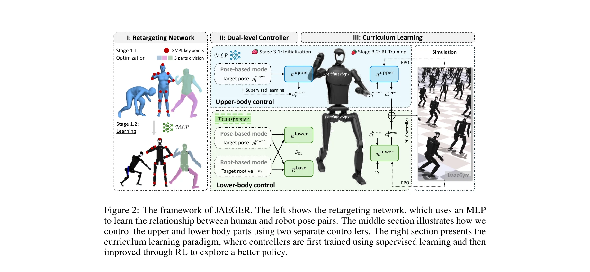
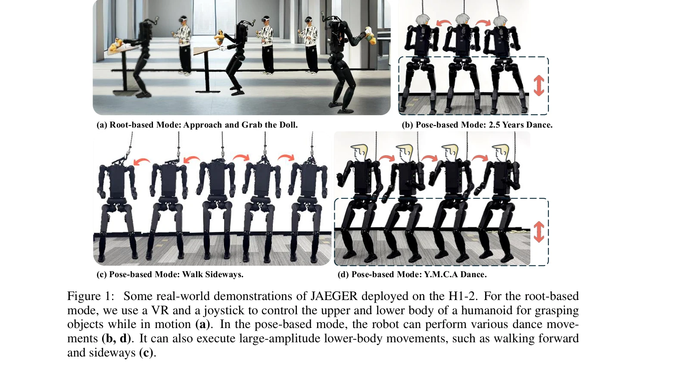

저자: Ziluo Ding, Haobin Jiang, Yuxuan Wang, Zhenguo Sun, Yu Zhang, Xiaojie Niu, Ming Yang, Weishuai Zeng, Xinrun Xu, Zongqing Lu | 날짜: 2025-05-10 | URL: https://arxiv.org/abs/2505.06584

Figure 2: The framework of JAEGER. The left shows the retargeting network, which uses an MLP
JAEGER는 인간형 로봇의 상체와 하체를 독립적인 두 개의 컨트롤러로 분리하여 제어하는 dual-level whole-body controller를 제안하며, root velocity tracking(coarse-grained)과 local joint angle tracking(fine-grained) 제어를 모두 지원한다.

Figure 1: Some real-world demonstrations of JAEGER deployed on the H1-2. For the root-based
Figure 2: The framework of JAEGER. The left shows the retargeting network, which uses an MLP
총평: JAEGER는 상하체 분리 설계와 MLP 기반 retargeting, 체계화된 curriculum learning을 통해 인간형 로봇의 whole-body control 문제에 대한 실질적이고 창의적인 해결책을 제시하며, 실제 환경에서의 검증을 통해 높은 실용성을 입증한다.